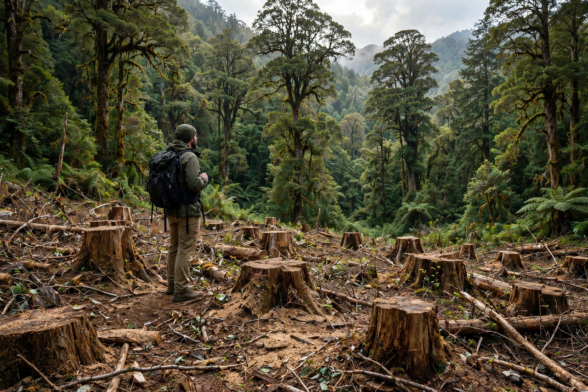

From Wikipedia, the free encyclopedia
| Environmental ethics | |
|---|---|
| Scope | Ethics of the human relationship to the non-human world |
| Key questions | Intrinsic vs instrumental value of nature; moral standing of animals, species, ecosystems; duties to future generations; climate justice |
| Key figures | Aldo Leopold ('land ethic'), Arne Næss, Peter Singer, Holmes Rolston III, J. Baird Callicott |
| Related | Deep ecology; ecofeminism; animal ethics |

Environmental ethics is the branch of philosophy that studies the moral relationship between human beings and the non-human world: what, if anything, we owe to animals, plants, species, ecosystems and future generations, and whether nature has value in itself or only as a resource for us. Emerging as a self-conscious field in the 1970s — the decade of Earth Day, the first environmental law wave, and journals such as Environmental Ethics (founded 1979) — it grew from older roots in conservation writing and in the protests against purely anthropocentric moral traditions.
Aldo Leopold's A Sand County Almanac (1949) proposed the land ethic: "A thing is right when it tends to preserve the integrity, stability, and beauty of the biotic community" — extending moral community membership to soils, waters and the land itself. Arne Næss's distinction between shallow and deep ecology (1973) asked whether environmental protection serves human interests or nature's intrinsic value. Peter Singer's animal liberation (1975) extended utilitarian concern to sentient animals, while Tom Regan argued for animal rights on deontological grounds; Holmes Rolston III developed a systematic account of intrinsic value in nature, and J. Baird Callicott elaborated Leopold's ethic into a communitarian philosophy of the land.
The field argues over the locus of value: sentient individuals (animal ethics), all living things (biocentrism, Paul Taylor), or wholes such as species and ecosystems (ecocentrism) — with the "environmental fascism" objection pressed against holists who might sacrifice individuals to the whole. Other standing debates include wilderness and its critics (William Cronon's "The Trouble with Wilderness"), the moral status of species preservation versus individuals, duties to future people (and the non-identity problem), population, consumption, and the distribution of environmental burdens — the environmental justice movement's charge that pollution falls on the poor and the racialised. Climate ethics has become the field's centre of gravity: historical responsibility, loss and damage, geoengineering, and the ethics of adaptation.
Deep ecology · Philosophy · Peter Singer · Environmentalism · Ecofeminism